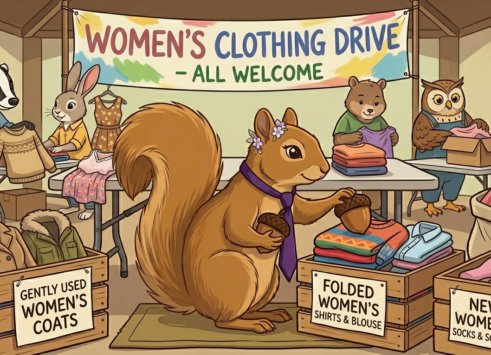

Clothing Drives
Collecting professional and everyday clothing donations to support women entering or re-entering the workforce.
Current Initiative
This year, the Via Faciam Foundation is focusing on professional clothing support and community-driven giving for single mothers.
For many women, clothing is more than appearance — it is confidence, preparation, and the ability to step into professional spaces feeling capable and respected.
Single mothers often carry the responsibility of supporting both themselves and their families while navigating financial pressure, career advancement, and limited access to professional resources. The Via Faciam Foundation believes women deserve to enter workplaces and opportunities feeling empowered, prepared, and supported.
This year’s focus
The foundation is organizing donation drives, fundraising efforts, community partnerships, and awareness initiatives centered on expanding access to interview clothing, workwear, and everyday professional resources.
The goal is not simply to provide clothing, but to help create confidence, dignity, and opportunity through practical support and community investment.

Collecting professional and everyday clothing donations to support women entering or re-entering the workforce.
Raising financial support for women-focused community organizations and direct initiative needs.
Collaborating with local nonprofits and women’s support organizations to increase long-term impact.
Encouraging conversations around economic opportunity, confidence, and access to resources.
The Via Faciam Foundation welcomes support through donations, partnerships, clothing contributions, and participation in philanthropic events throughout the year.